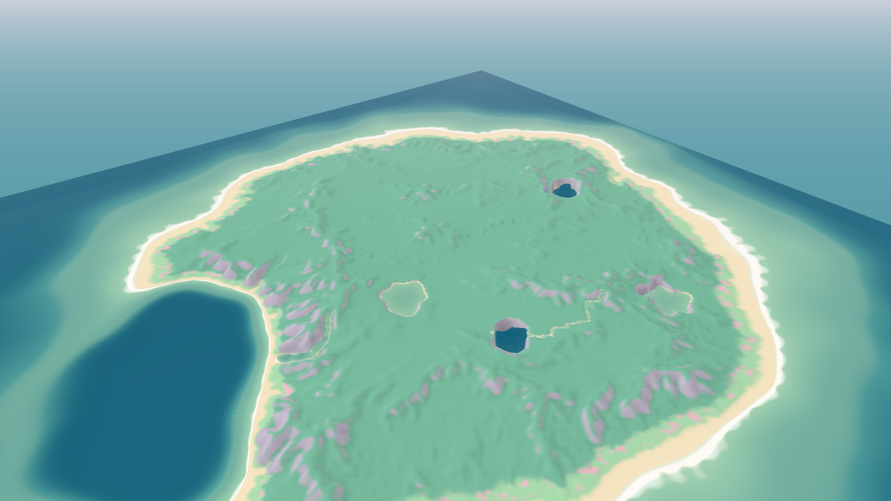

2026-11-15 · M2 terrain quality pass
Making the islands less boring
Our first islands worked but felt flat, so today was about giving the land something to look at.
Meadow Cove now has rounded knolls with rocky shoulders, Harbor Town got a flat shelf where a town could one day sit, and the mountain rock has layered banding like real cliffs. Lakes no longer sit in crater pits; their edges blend into the hills.
We also thinned the foam line so the shoreline looks like a drawing instead of a white smear. There is still a lot to fix, but the islands are starting to have personality.



What still looks bad
- Highland rivers are now barely visible from far away; they need to read as ribbons.
- Distant horizon shows pale stepped bands past the world edge in the highlands view (fog plus chunk edge).
- Meadow Cove is still mostly one green; zones need more variety and the pink flower specks look like confetti.
- Strata banding can read as stripes on large mountain faces.
- Lakes are flat dark discs with no shore detail.
- Shore views are still low drama and the beach is very wide and flat.
- Everything is still teal-green; palette needs more colour range.
Next
- Rivers as clear ribbons, wider and with banks.
- Fix the horizon bands, widen colour range, then move on to streets.